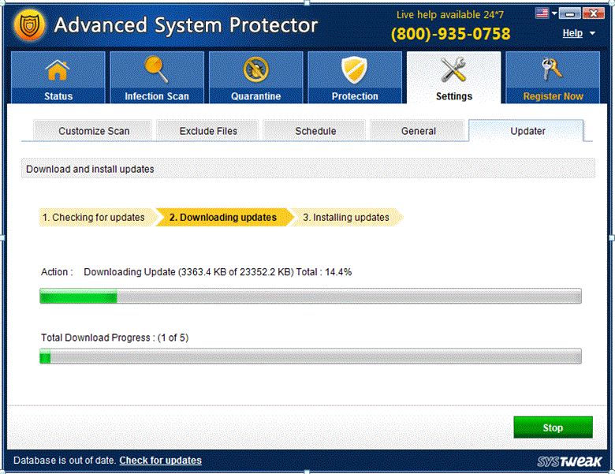
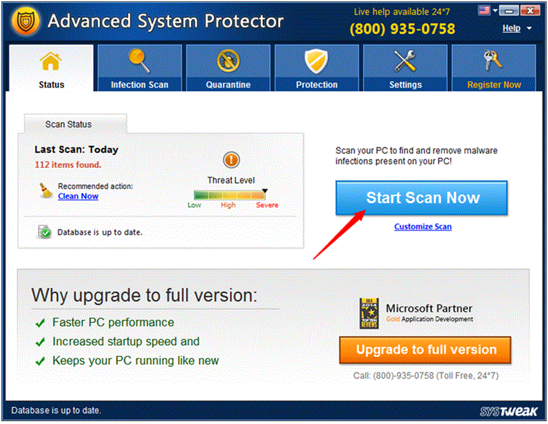
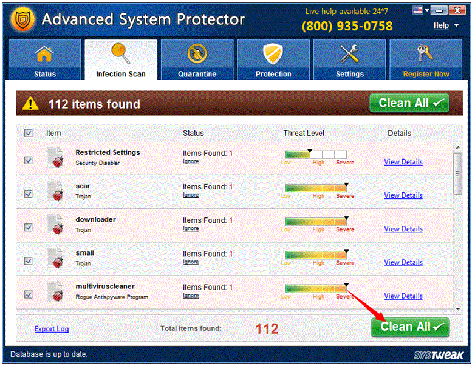

Scaricare applicazioni freeware da siti di terze parti dovrebbe essere l'ultima cosa che fai, perché non è una pratica a prova di errore. Si potrebbe finire per avere internet security protection rogue antispyware sul vostro computer. Non stiamo cercando di dire che internet security protection rogue antispyware è un virus pericoloso. Se avete a cuore il vostro sistema di sicurezza , verrà rimosso internet security protection rogue antispyware oggi.
internet security protection rogue antispyware è un dannoso che riduce le impostazioni di sicurezza e gocce file sul computer di destinazione. internet security protection rogue antispyware è in grado di controllare il sistema di computer interessato senza autorizzazione dell'utente o conoscenza. internet security protection rogue antispyware può essere installato surrettiziamente sulla macchina compromessa da altre applicazioni o eventuali operazioni non sicure attraverso falle di sicurezza. internet security protection rogue antispyware può infettare i computer in diversi modi. Ad esempio, può essere scaricato tramite script dannosi drive-by-download da porn danneggiato e siti web del freeware shareware /, installati attraverso lo spam allegati e-mail, download multimediali e reti sociali o eseguiti da altre minacce per la famiglia system.The Wscript.exe disperdere la e-mail spam che possono essere collegati agli installatori del malware. Malware come questo è comunemente distribuito attraverso scaricabile software di terze parti. Di solito è offerto agli utenti durante il processo di installazione come un modo per i proprietari di software per fare soldi. Un sacco di volte che gli utenti non hanno idea di quello che hanno deciso di installare sul proprio computer e poi ci domandiamo perché il loro computer ha così tanti annunci su di esso.
Essa provoca danni irreversibili inserendo i suoi file corrotti che può cambia configurazione DNS e indebolire la sicurezza del browser Sostituisce homepage, reindirizza websearch o link a siti web sbagliate internet security protection rogue antispyware può portare tempesta di annunci sgradevoli e dannosi ma che compaiono sul vostro PC Essa viola la privacy, annusa i tuoi dati personali e rivela agli hacker Rende il computer più lento, diminuisce la velocità di internet e provoca plugin va in crash frequenti internet security protection rogue antispyware può dare virus installando applicazioni dannose dal Internet senza autorizzazione La nostra ricerca mostra anche che internet security protection rogue antispyware è direttamente correlata ad altre applicazioni adware, perché mostra banner sulla cima di alcuni negozi on-line. Per di più, alcuni dei banner in un certo numero di siti web potrebbe essere firmato come ds non da questo sito.

Quando il Download del file - Avviso di protezione finestra di dialogo fare clic sul pulsante "Save"
Dopo il download, accedere al percorso scaricato e fare doppio clic sul aspsetup.exe per avviare l'installazione guidata.
Seguire le istruzioni all'interno del programma di installazione per completare l'installazione di ADVANCED SYSTEM PROTECTOR.

Ora, è possibile visualizzare la minaccia elencati dopo la scansione approfondita di applicazione

Pertanto, adware sarà rimosso da ADVANCED SYSTEM PROTECTOR, aiutano a sbarazzarsi di un problema con poco sforzo e in poco tempo.
Il metodo più affidabile per rimuovere internet security protection rogue antispyware sta usando una reputazione anti-spyware e di eseguire una scansione completa del sistema. Naturalmente, si può provare a rimuoverlo manualmente e ci avete inviato step-by-step linee guida per questo, ma non stupitevi ancora vedere "Ads di internet security protection rogue antispyware" dopo che. Questo può accadere perché programmi come internet security protection rogue antispyware a volte possono apparire estremamente fastidioso e rimanere attivi attraverso le voci di registro. Ecco perché si consiglia di rimuovere automaticamente. Per ulteriori informazioni sulla rimozione di questo programma potenzialmente indesiderato, attenersi alla seguente procedura:
Il metodo più affidabile per rimuovere internet security protection rogue antispyware sta usando una reputazione anti-spyware e di eseguire una scansione completa del sistema. Naturalmente, si può provare a rimuoverlo manualmente e ci avete inviato step-by-step linee guida per questo, ma non stupitevi ancora vedere "Ads di internet security protection rogue antispyware" dopo che. Questo può accadere perché programmi come internet security protection rogue antispyware a volte possono apparire estremamente fastidioso e rimanere attivi attraverso le voci di registro. Ecco perché si consiglia di rimuovere automaticamente. Per ulteriori informazioni sulla rimozione di questo programma potenzialmente indesiderato, attenersi alla seguente procedura: Rimuovere manualmente problemi internet security protection rogue antispyware Rimuovere internet security protection rogue antispyware da Windows XP Avviare il computer in modalità provvisoria. Eliminare il file eseguibile del virus nascosto in. Aprire il Registro di sistema e passare ai tasti. Controllare i file denominati win.ini e system.ini. Guardare attraverso la cartella di avvio a: \\ Start Menu \\ Programs \\ startup. Effettua una ricerca per l'eseguibile virus. Vai al pannello di controllo di guardare attraverso l'elenco dei servizi. Rimuovere internet security protection rogue antispyware da Windows 7 Finestre aperte Start Menu andare nel campo di ricerca. Vai a Microsoft \\ Windows \\ Start Menu \\ Programs \\ startup. Rimuovere i file associati. Accesso Task Manager di Windows di terminare i processi rogue_name. Per accedere alla finestra editor di registro per rimuovere i valori del Registro di sistema. Rimuovere internet security protection rogue antispyware da Windows 8 Fare clic destro sul Metro UI schermata iniziale. Selezionare tutte le applicazioni (angolo in basso a destra) e fare clic sul pannello di controllo. Vai a disinstallare un programma (in Programmi e funzionalità). Fare clic destro sul programma che si desidera rimuovere, selezionare Disinstalla. Rimuovere internet security protection rogue antispyware da Windows Vista Riavviare il computer in modalità provvisoria con rete. Riavviare il computer infettato. Tenere premuto il tasto F8 prima dell'avvio di Windows start-up spettacoli schermo. Utilizzare i tasti freccia per selezionare la modalità provvisoria con rete e premere invio. Arrestare i processi di programma del Task Manager di Windows. Eliminare i file dei virus associati. Eliminare le voci di registro create dal programma. Fare clic sul pulsante di avvio per inserire regedit nella casella Esegui e fare clic su OK. Passo finale, Riavviare il computer per rendere effettive le modifiche e controllare se internet security protection rogue antispyware sono stati rimossi con successo. Il computer dovrebbe rimuovere internet security protection rogue antispyware con successo, se il computer non è protetto da qualsiasi anti-virus, soluzione anti-malware, si può prendere in considerazione l'acquisto di AVANZATO SISTEMA PROTECTOR dalla Systweak per proteggere e contro questi tipi di minacce in futuro.